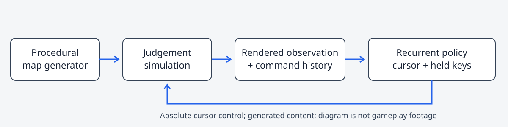
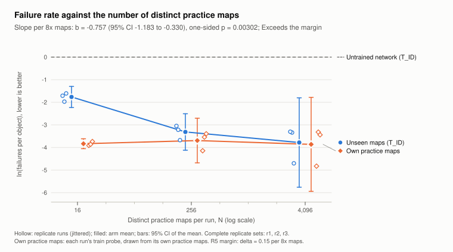
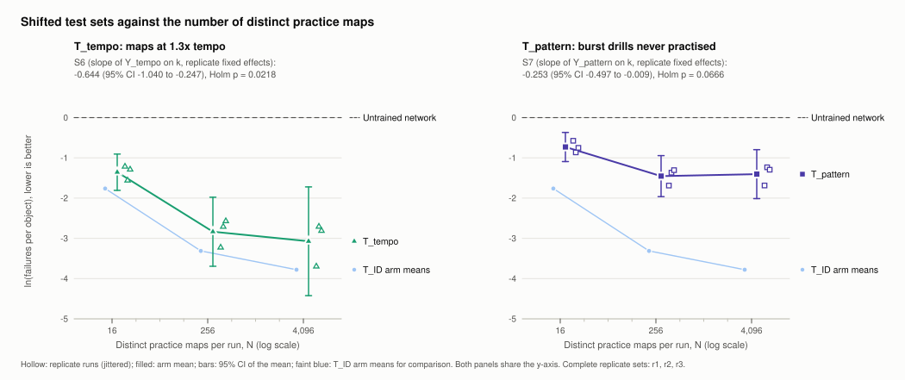
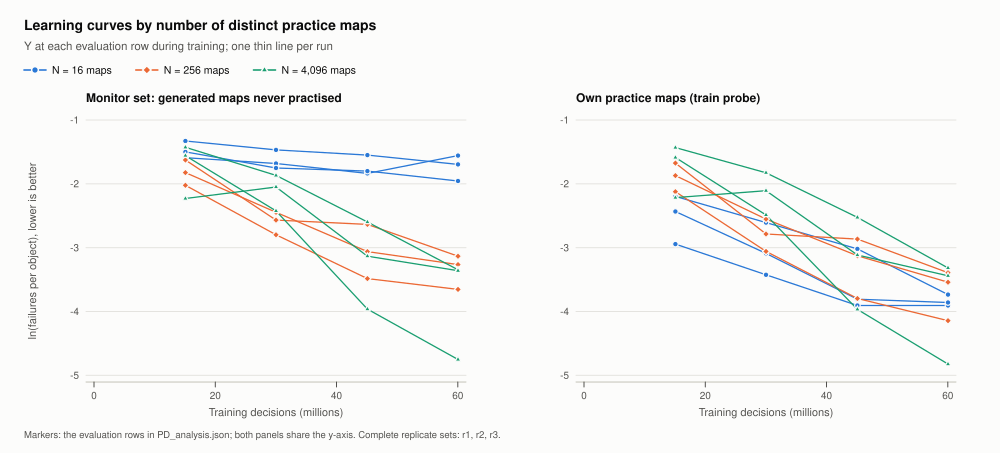

1 The osu-lab system
osu-lab combines a vectorized osu!standard simulator, procedural map generation, renderer interfaces, a recurrent policy, PPO training and evaluation tools. Its portable software release includes a CPU quick-start and generated conformance fixtures.
The simulator runs many episodes in parallel on one machine: the judgement rules run on the CPU in parallel over environments, a GPU kernel renders what the agent sees, and a PPO trainer learns from those frames.

Scroll sideways to see the whole diagram.

- Rules
- A vectorized port of the judgement rules of a pinned osu!lazer build (release 2026.921.0). Each decision is a 60 Hz step; between decisions the rules advance in 1 ms sub-updates, judging hits, slider ticks, repeats and ends, and spinners.
- Observation
- A 256 × 192 RGB frame of the playfield, drawn on the GPU in the game’s default style, plus the previous command and held keys. The calibrated renderer’s textures and fonts are separately licensed and not distributed; an asset-free simple renderer is included as a diagnostic approximation.
- Actions
- An absolute cursor position and two held keys, 60 times per second. The cursor can cross the playfield in one step, so this is not a model of human motor control.
- Training
- PPO with 1,024 parallel environments and 128-step rollouts, a recurrent policy over a convolutional encoder, and a moving average of the parameters for evaluation. Training episodes are clips of 8 to 32 objects; evaluation plays whole maps.
- Throughput
- A median of 9,143 decisions per second on one consumer GPU in the study (run medians 8,883 to 9,746), so each 60-million-decision run took under two hours. This is historical study throughput, not CPU quick-start performance.
Beatmap conversion, slider paths, stacking, difficulty mappings and the judgement and rate rules adapt upstream osu! and osu-framework code at pinned commits, and their MIT notices ship with the software (see credits). The integration is original work; the upstream rules, PPO and recurrent networks are established methods and are not presented as new.
2 Generated maps
Every map in this project comes from osu-lab’s procedural generator, driven by a seed. A difficulty level between 0 and 1 sets the tempo, approach rate, timing windows, circle size, spacing, rhythm divisions and the chances of sliders, spinners and streams; a variant then makes the map a slider drill, spinner drill, stream/jump drill or plain map. Because maps are rebuilt from recorded seeds, practice and test sets can be kept apart and checked by hash. No community-made beatmap was used for training, evaluation or testing.
The level is a synthetic sampling label (the study’s pseudo-difficulty is 0.5 + 4.5 × level), not an osu! star rating, and should not be compared with ratings of real maps.
3 Simulator checks
The simulator’s judgement rules were checked against the game engine on generated maps. In a historical comparison, 72 scripted input traces on 10 seeded generated maps (four general, six spinner-heavy) were replayed both in the simulator and in a pinned osu!lazer build through an instrumented host. All 72 agreed step for step: 77,323 recorded steps with no mismatched step, and equal per-type judgement totals, maximum combo and episode length, at normal speed and at the Double Time rate.
The comparison covers judgement counts, combo and episode timing. It does not cover accuracy, score or object positions; the traces contain no missed slider ticks, slider ends or spinners, and only 9 Meh judgements. Native per-step events were not retained, so the release’s tests re-simulate judgement totals, maximum combo and step count rather than repeating the step-by-step comparison. None of this establishes universal fidelity or pixel-exact rendering.
The runtime evidence is inherited: an earlier release candidate ran the CPU example and passed 107 generated-conformance, 7 interface and 9 synthetic-analysis tests with nothing skipped, and this release keeps that code and those fixtures byte for byte without rerunning them. Its own package, licence, document, evidence and archive checks are separate. These are the publisher’s records, not independent attestation.
4 Study design
The study, Study PD, asks: at a fixed training budget, how does the number of distinct procedurally generated practice maps change a pixel-input agent’s failure rate on unseen generated maps, in distribution and under two shifts?
Arms and training
Three arms of 16, 256 and 4,096 distinct practice maps, each 16 times the previous, and three replicate sets: nine runs, all complete, none excluded. This is the preregistered fallback design (F1), selected before the freeze by a pilot rule written in advance. Each replicate draws its own map sequence and training seed, and its pools are nested: the 16-map pool is the first 16 maps of the 256-map pool, which is the first 256 of the 4,096-map pool, so arms differ in how many distinct maps they see, not in which kind.
Every run trained from scratch for a target of 60 million decisions with the same frozen recipe; final updates overshoot the target slightly. The evaluated policy is the final parameter average (decay 0.9999). Runs trained one at a time in a preregistered Latin-square order.
Test sets and outcome
The sealed test sets were drawn after the freeze: T_ID, 500 unseen maps of the practice construction (the primary set); T_tempo, 250 maps of the two harder bands with the tempo raised 1.3 times; and T_pattern, 250 burst drills, a drill family no run practised as such. Every final policy played the same merged test file once, deterministically. Each run also played its own first min(N, 256) practice maps to measure memorization.
The outcome is Y = ln(F / O), the log failure rate: F counts failures (combo breaks plus missed slider ends) and O counts combo-bearing judgements. Lower is better.
Analysis
The primary hypothesis, H1, predicts that more distinct maps mean fewer failures on unseen maps. It is tested with a least-squares slope of Y on T_ID per 8× more maps, with one intercept per replicate set, one-sided at 0.05, and reported with 95% and 90% intervals and one of five preregistered categories against a margin of δ = 0.15 per 8× (about a 14% change in the failure rate). Six secondary tests, Holm-corrected and one-sided in the predicted direction, compare 16 with 4,096 maps and the two adjacent steps (paired by replicate), and fit slopes for the memorization gap (H2), T_tempo (H3) and T_pattern (H4).
| Category | Rule (p from the one-sided test; 90% interval) |
|---|---|
| Exceeds the margin | p < 0.05 and the 90% interval lies entirely beyond +δ or entirely beyond −δ (this study) |
| Detectable difference, magnitude uncertain | p < 0.05, and the interval neither lies inside ±δ nor entirely beyond it |
| Detectable but within the margin | p < 0.05 and the 90% interval lies inside ±δ |
| Equivalent within the margin | p ≥ 0.05 and the 90% interval lies inside ±δ |
| Inconclusive | p ≥ 0.05 and the interval is not inside ±δ |
Protocol
Each step left a file whose hash later steps checked, so the design could not be tuned to the test maps.
- Pilot, then freeze
An exploratory pilot set the budget by a rule written in advance; the frozen preregistration and the hash of every pool, configuration, queue file and analysis script went into one manifest.
- Two trusted timestamps
DigiCert and Sectigo signed the manifest’s SHA-256 digest under RFC 3161.
- Test maps drawn
Generated from a seed derived from both timestamp tokens, checked by hash against every practice pool, and registered so that the trainer and the queue refuse them.
- Training
Nine runs, one at a time, under queue guards and a fixed cut-off.
- One test batch
Every final policy played the sealed test file once; the batch tool refuses a second run.
- Analysis and review
The preregistered script, tested on synthetic data before any result existed, then internal review (section 7).
All times are on 1 November 2026. The timestamp tokens, the manifest and the sealed maps are not distributed, so these checks cannot be repeated from the public release.
5 Results
All nine runs reached the budget on their first attempt, with no rerun or stop, and the test batch ran once. Throughout, Y is the natural log of failures per combo object; lower is better. The preregistered tests are the primary slope and the six secondary tests; everything else is labelled descriptive or exploratory.
Primary result · preregistered
Agents trained on more distinct practice maps failed less often on unseen maps of the same construction. The preregistered slope is b = −0.757 per 8× more maps (95% CI −1.183 to −0.330; one-sided p = 0.003; df = 5; nine runs in three complete replicate sets), under the preregistered classical OLS error term. Along the fitted line, failures per object fell by about 53% per 8× more maps (95% CI 28% to 69%). The whole 90% interval (−1.091 to −0.423) lies further from zero than the margin δ = 0.15, so the category is Exceeds the margin; the category says nothing more about how large the slope is.
What the estimate rests on. With three equally spaced arms, the slope is 3/8 of the 16-versus-4,096 contrast; the 256-map runs enter only its error term. Judged by replicate-to-replicate variation alone (S1 below), that contrast’s 95% interval includes zero and it is not significant after Holm, so the uncertainty depends on the error model. The evidence covers one generator, one recipe and budget and three replicate sets, and more maps also meant fewer repetitions of each map. It does not establish transfer to human-made maps, human-level skill, universal simulator fidelity or an unlimited scaling law.


Secondary tests · preregistered
S1 to S3 compare two arms within each replicate set (a difference in Y); S5 to S7 are slopes per 8× more maps, fitted like the primary. Only the memorization-gap slope (S5) and the tempo-shift slope (S6) met the six-test Holm rejection criterion.
| Test | Estimate | 95% CI | Holm p | After Holm |
|---|---|---|---|---|
| S1 4,096 vs 16 maps (difference in Y) | −2.018 | −4.347 to 0.312 | 0.067 | not significant |
| S2 256 vs 16 maps (difference in Y) | −1.550 | −2.668 to −0.432 | 0.054 | not significant |
| S3 4,096 vs 256 maps (difference in Y) | −0.468 | −1.679 to 0.744 | 0.119 | not significant |
| S5 Slope of the memorization gap (H2) | −0.746 | −1.099 to −0.394 | 0.009 | significant |
| S6 Slope on T_tempo (H3) | −0.644 | −1.040 to −0.247 | 0.022 | significant |
| S7 Slope on T_pattern (H4) | −0.253 | −0.497 to −0.009 | 0.067 | not significant |
S1 to S3 use paired replicate errors with two degrees of freedom; S5 to S7 use the preregistered classical OLS error term with five. S6 is significant under that error term. The burst-drill advantage (S7) was not established after correction, although its individual interval excludes zero.


Arm means and descriptive results · descriptive
| Distinct practice maps | T_ID | Own practice | Gap G | T_tempo | T_pattern |
|---|---|---|---|---|---|
| 16 | −1.763 | −3.833 | 2.071 | −1.356 | −0.729 |
| 256 | −3.313 | −3.692 | 0.379 | −2.836 | −1.454 |
| 4,096 | −3.780 | −3.861 | 0.081 | −3.073 | −1.404 |
Intervals, per-replicate values and tables by difficulty band and map variant are in the aggregate analysis inside the source archive.
- Unequal steps. In every replicate set both steps lowered Y on T_ID, and the step from 16 to 256 maps was the larger. As paired mean changes, failures per object fell by about 79% from 16 to 256 maps and about 37% from 256 to 4,096 maps; each is a 16× step, not the primary 8× effect, and neither is significant on its own after Holm.
- Memorization (H2, supported). With 16 maps the agents played their own practice maps far better than unseen maps (gap 2.071); the gap shrank to 0.379 with 256 maps and 0.081 with 4,096. Play on own practice maps was similar across arms, so the gap closed because play on unseen maps improved; H2 mostly restates H1.
- A faster tempo (H3, supported under the preregistered error term). On the two harder bands at 1.3× tempo the slope was −0.644. These tempos overlap the practised range, so the advantage held under a speed-up, not beyond every practised tempo.
- Burst drills (H4, not supported). Every arm stayed far worse than on in-distribution maps, and no run completed a drill without a failure. Every 256- and 4,096-map run had fewer failures there than every 16-map run, with no further gain beyond 256 maps, but the slope (−0.253) is not significant after Holm: the data neither establish nor exclude a benefit.
- Replicates. Replicate 1’s 4,096-map agent (Y −4.699 on T_ID) was far better than the other two (−3.339 and −3.302). Post hoc, it was the only agent that completed every spinner, and completing spinners did not follow the number of maps. Because the slope rests on the 16-versus-4,096 contrast, this enters the estimate; leaving replicate 1 out (an exploratory check) still gives a slope beyond the margin.
- Training curves. The 4,096-map runs were still improving steeply when the budget ended, the 256-map runs more slowly and the 16-map runs slowly throughout (Figure 5). The results describe one budget.
- References. A scripted autopilot that knows every object’s position and time in advance played the whole test pool without a failure; the untrained network failed every object.


Robustness · exploratory, not preregistered
Leaving out any one replicate set, the slope stays negative with a one-sided p below 0.05 and a 90% interval beyond the margin; with a replicate-level error term, the 90% interval still lies just beyond the margin. The direction and the category hold in every check, but the p-value of 0.003 depends on the preregistered error term. The residual standard deviation of the primary fit (0.541) was larger than every value in the preregistered precision table (largest 0.40).
6 Limitations
- Generated maps only. All training and test maps come from one procedural generator. The results say how practice diversity matters within that generator’s distribution, under a speed-up and on a drill family from the same code base; they do not show how agents would do on human-made beatmaps.
- One generator. Diversity here means more seeds of the same generator, not more generators or styles.
- An absolute cursor. The agent sets the cursor position directly at every 60 Hz step and can move it any distance in one step, so aiming is easier than for a person and its play is not a model of human play.
- Synthetic difficulty. The generator’s pseudo-difficulty (0.5 + 4.5 × level) is not an osu! star rating.
- Three replicate sets. The primary inference has five residual degrees of freedom. The category says where the 90% interval lies relative to the margin, not how precise the estimate is, and the p-value depends on the preregistered error term.
- Three arms, one budget, one recipe. The pilot rule selected the fallback arms (16, 256 and 4,096 maps rather than the planned four arms up to 8,192) at 60 million decisions; the effect could differ at other budgets, model sizes or hyperparameters.
- Diversity or repetition. At a fixed budget a 16-map run practised each map in thousands of training clips and a 4,096-map run each map in about twenty. The design cannot separate the effect of diversity from that of repeating each map less.
- An uneven curve. Most of the gain came between 16 and 256 maps. The straight line in log N summarizes three arms, its shape was not a preregistered test, and nothing here establishes a scaling law that continues indefinitely.
- The averaged policy. With the recipe’s warm-up schedule the parameter average weights the last quarter of training most, so arms still improving fast are evaluated somewhat behind their final weights; whether averaging favours an arm was not measured.
- One pass on one test draw. Each agent played each test map once, deterministically; the intervals reflect training replicates only, not which test maps were drawn.
- Simulator coverage. Missed slider ticks, slider ends and spinners, all counted as failures, were not compared with the game, and the accuracy the report tabulates was not validated against it.
- Omitted inputs. Raw study evaluations, training logs, native per-step traces, renderer comparison frames and the renderer’s assets are not distributed. The public records are traceable, but tracing them is not an independent authentication of those inputs.
7 Internal review and deviation D1
The results document went through internal review rounds, each covering numbers and provenance, statistics, claims against the preregistration, clean-data and protocol compliance, readability, and a skeptic’s reading. This was internal review, not external peer review.
The preregistration allowed at most three rounds. None of the first three was free of major findings (the third found one major wording problem), so review continued until a fifth full round, on revision r5, found no major problem and the required fixes were rechecked. Exceeding the cap is the study’s one deviation from the preregistration, D1. It is recorded in a dated deviations file included in the source archive, and James Liu approved it retrospectively on 1 November 2026, accepting r5 as the final internally reviewed results document; the breach remains disclosed. It changes no number.
The recorded final clean-data audit, which was not a dry run, is a PASS: it checks mechanically that no community-made beatmap, and no model trained on one, was used. It is the study’s existing record, not an independent re-authentication of the raw data.
8 Code and downloads
The files below are release v0.1.0rc6 of jamesliuai/osu-lab. The source archive holds the software, the public documents and the evidence; the wheel installs the osu-sim distribution, imported as osu_sim. No trained weights, community beatmaps, music, game textures or fonts are included.
-
osu-lab-0.1.0rc6-source.zip 1.3 MB · 1,325,167 bytes
Complete source: software, public documents and evidence.
SHA-256 00f686dce2f69a705df21ff4ffbe6c8c426582d65d7d840505b07e1bb0ad94fe
-
osu_sim-0.1.0rc6-py3-none-any.whl 172 kB · 171,567 bytes
The osu-sim Python package: runtime code with its licence notices.
SHA-256 f24a3f83b8497b6e2937234295887ece59b149aa7d08bea9dad03a7ec443f01a
-
REPORT.pdf 457 kB · 457,093 bytes
The 13-page technical report.
SHA-256 de75466148c32973be749c263939ad88b06c40a0dd0f07543befc87d869f4358
-
ONE_PAGE_SUMMARY.pdf 174 kB · 174,069 bytes
The one-page summary.
SHA-256 7d257717a8ee1106ccd1b7b40f475f22a320ebf1b86941fa8df6a5222712ab3f
Quick start on CPU
cd osu-lab-0.1.0rc6
python -m venv .venv
# activate: .venv\Scripts\Activate.ps1 (PowerShell) or source .venv/bin/activate
python -m pip install ".[test]"
python examples/generated_data_example.py --out-dir demo_output
python -m pytest tests -p no:cacheproviderPython 3.12, from the extracted source archive. The example generates maps, compiles them and plays scripted on-time and late actions on the CPU; its judgement counts are a software demonstration, not a learned-policy result. It needs no game client, external assets, checkpoint or GPU, though installation fetches dependencies. Training needs a CUDA GPU, and full-renderer training needs the separately licensed assets this release omits.
Check the release
python tools/verify_release.py --strict
python tools/verify_claims.py
python tools/verify_study.py
python tools/verify_documents.pyStandard-library checks, run from the extracted source root. They hash the public evidence, trace each scoped claim, recompute the recorded aggregate study calculations and check the documents’ figures. They do not train, rerun the study, open sealed maps or authenticate the omitted raw inputs.
9 Credits and licences
Upstream
osu-lab adapts behaviour and algorithms from osu! and osu-framework by ppy: beatmap decoding and conversion, slider paths and nested events, stacking, difficulty mappings, judgement and rate handling, and parts of visual transform, text layout and colour behaviour, from pinned commits aaa75b7c and 247dee98. Those portions remain under ppy’s MIT licence, whose notices ship with the code. osu-lab is independent research, not an official or endorsed osu! product.
Licences
- Software and release utilities: MIT.
- James Liu’s rights in 86 fixture and example files and six factual or bibliographic records: CC0 1.0.
- His rights in 13 study, document and chart files (the report and summary in Markdown and PDF, the deviation record, the exploratory receipt, and the three study charts as SVG and PNG): CC BY 4.0, attributed to James Liu, osu-lab / Study PD.
- Release-authored documentation: CC BY 4.0.
These grants cover only rights James Liu holds. They grant nothing in osu! or ppy names, game textures, fonts or music, community maps or other third-party material, and adapted upstream code keeps its own notices.
Figures and video on this page
Figures 3 to 5 are the study’s charts, shown unchanged; Figure 1 is the release’s architecture diagram; Figure 2 is drawn for this site from the release’s example maps. These five figures are not screenshots or recordings of play. The project video redraws recorded simulator play with its own custom skin; it does not show the agent’s original input frames. No game or community-skin artwork, font files, private recordings or checkpoints are distributed.
Video: James Liu, osu-lab. CC BY 4.0. The 1,024-game mosaic illustrates training with a final policy; the three-agent clip shows one development-set map, not the test-set comparison. Open video.
Citation
@misc{liu2026practice,
author = {Liu, James},
title = {Practice diversity and generalization in a pixel-input osu! agent:
a pre-registered study on procedurally generated maps},
year = {2026},
note = {osu-lab, release v0.1.0rc6},
url = {https://jamesliuai.github.io/osu-lab/}
}